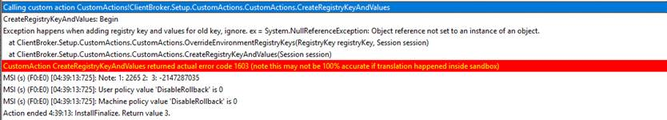
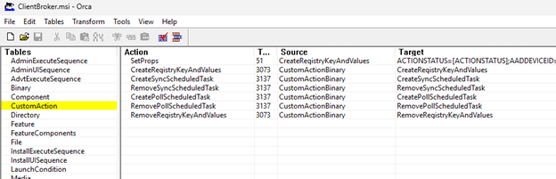
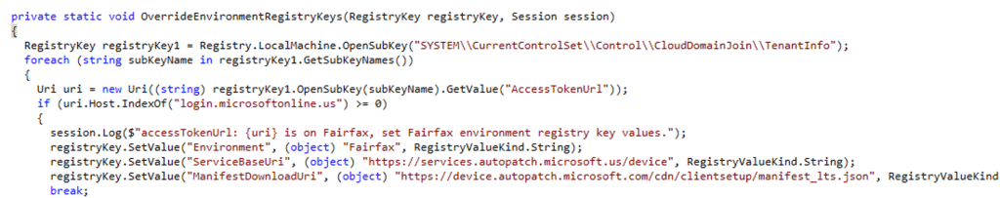
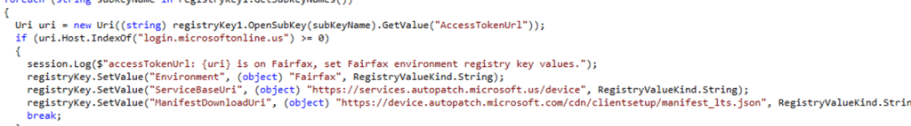
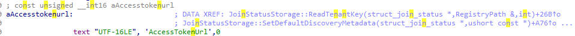

This blog will show you why configuring the Autopatch Client Broker as a blocking app in the Enrollment Status Page can break your enrollment. The issue is not the broker itself, but a custom action in the MSI that checks the Windows CloudDomainJoin TenantInfo registry key after Windows Autopilot pre-provisioning has already deleted it
What is the Autopatch Client Broker
Sometimes an installer fails because it cannot copy files. Sometimes it fails because the service behind it is unavailable. And sometimes it fails because the installer asks Windows a question after Windows has already removed the information to do so. This one belongs in that last category. The Windows Autopatch Client Broker can be deployed as a Win32 app.

That sounds like a normal and supported approach, especially because the broker is a local component that helps Windows Autopatch understand whether a device is ready and healthy enough to be managed. Microsoft describes the broker, along with the Microsoft Cloud Managed Desktop Extension, as part of the readiness flow that collects device readiness results and sends them back to the Windows Autopatch service.

So far, nothing strange. The broker needs local configuration. It needs to know which environment it belongs to, which manifest it should use, and which service endpoint it should talk to. For a normal commercial tenant, that means the normal Autopatch endpoints. For a US government tenant, also known as Fairfax, that means different endpoints. That small environment check is where the story starts to get funny.
The Autopatch client Broker and the Autopilot ESP
The issue only seems to occur when the Autopatch Client Broker is deployed as a required, blocking Win32 app during Autopilot pre-provisioning.

Once you start the Autopilot Pre-Provisioning, the device will go through the Entra and Intune enrollment. Once that is done, the ESP will start installing required apps… This is the moment the Autopatch broker MSI starts as part of that required app flow. Instead of installing it cleanly, the Autopatch Client Broker MSI fails with error 1603.
That alone would be annoying, but there is a second part that makes it worse. When the same MSI is installed later, after the device is fully enrolled and the Windows identity state has settled, it installs successfully? That’s a bit weird?
That tells us something important. The installer is not simply broken. The timing is! The MSI log points directly to the failing custom action:


Calling custom action CustomActions!ClientBroker.Setup.CustomActions.CustomActions.CreateRegistryKeyAndValues: CreateRegistryKeyAndValues: Begin
That log line is the breadcrumb we need. The Autopatch Client Broker installer starts the CreateRegistryKeyAndValues custom action. That action then calls another function called OverrideEnvironmentRegistryKeys. Inside that function, the custom action hits a NullReferenceException. The MSI log says “ignore”, but the code does not ignore it. It catches the exception, logs the message, and then returns failure. Windows Installer receives that failure and turns it into a 1603.
So the word “ignore” is doing a lot of heavy lifting there. The ESP does not ignore it. The Autopatch client broker MSI does not ignore it… With it, the required app fails.
Why MSI custom actions are important
An MSI is not always just a package that copies files, creates folders, writes registry keys, and drops a shortcut somewhere. MSI packages can also contain custom actions. A custom action is extra code that runs during install, repair, upgrade, or uninstall.


That extra code can be useful. It can create scheduled tasks, repair a missing file, write configuration that depends on runtime information, or perform checks that are difficult to express in the normal MSI tables.
But that flexibility comes with risk. A normal MSI table is mostly declarative. A custom action is real code. If that code assumes something exists and that something does not yet exist, the whole installer can fail in an unexpected place just by looking at the files in the package.
We have seen this kind of installer story before. In the IME incident around IT1272653, the MSI behavior for the Intune Management Extension config file changed, and later Microsoft added a targeted custom action, EnsureAppConfigExists, to restore the missing config file from an embedded resource. In that case, a custom action became the safety net for a very specific installer problem.
The Autopatch Client Broker MSI also contains a managed custom action DLL: CustomActions.dll. The failing action in that DLL is ClientBroker.Setup.CustomActions.CustomActions.CreateRegistryKeyAndValues

That sounds boring enough to skip. It is not.
The check that should have been harmless
The important part is not just that the custom action writes broker configuration. The important part is what it does after that. After the custom action prepares the normal broker configuration, it calls this function: OverrideEnvironmentRegistryKeys(subKey1, session);


That function does not try to register the broker with Autopatch. It does not request a token, and it does not use that token to authenticate to the Autopatch service. The only simple job of the Override function is trying to detect which Microsoft cloud the device belongs to.
The code opens this registry path: HKLM\SYSTEM\CurrentControlSet\Control\CloudDomainJoin\TenantInfo

Then it loops through the tenant subkeys and reads this value: AccessTokenUrl
On a normal commercial tenant, that value looks like this: https://login.microsoftonline.com/<TenantId>/oauth2/token
For example: https://login.microsoftonline.com/b79783df-131e-4d00-8303-6f66c0fa4bfb/oauth2/token
For a US government tenant, the host is different: login.microsoftonline.us
That is all the custom action is checking. The code reads AccessTokenUrl, converts it into a URI, and checks whether the host contains login.microsoftonline.us.


So the logic is simple. If the URL host is login.microsoftonline.com, the tenant is commercial, and this function does nothing. The Autopatch Client broker keeps the normal configuration that was already written earlier by the installer.
If the URL host is login.microsoftonline.us, the tenant is Fairfax and the installer overwrites the broker configuration with Fairfax values. Those Fairfax values are written under the Autopatch Client Broker registry key: HKLM\SOFTWARE\Microsoft\WindowsAutopatch\ClientBroker
The values it writes are:
- Environment = Fairfax
- ServiceBaseUri = https://services.autopatch.microsoft.us/device
- ManifestDownloadUri = https://device.autopatch.microsoft.com/cdn/clientsetup/manifest_lts.json
That means AccessTokenUrl is not used by the installer as a token source. It is used as a shortcut to answer one question. Which Microsoft cloud is this device joined to?
Why the Autopatch Client Broker failed to be installed
This is the part that makes the failure feel silly. On a commercial tenant, the function only needs to do nothing. It only needs to see that the host is login.microsoftonline.com, decide that no Fairfax override is required, and continue. But the code assumes the CloudDomainJoin TenantInfo registry key ALWAYS exists.
It does this: RegistryKey registryKey1 = Registry.LocalMachine.OpenSubKey(“SYSTEM\\CurrentControlSet\\Control\\CloudDomainJoin\\TenantInfo”); And then immediately does this: registryKey1.GetSubKeyNames(); there is no null check.

So if Windows has already removed TenantInfo during the pre-provisioning cleanup, OpenSubKey() returns null.
System.NullReferenceException: Object reference not set to an instance of an object.

That is why the Autopatch Client Broker MSI can fail during ESP. Autopatch itself does not have to be unreachable, the broker registration does not have to be broken, and the MSI does not have to fail while copying files. The failure occurs much earlier, in a much smaller piece of logic: the installer tries to check whether the tenant is Fairfax, but the Windows registry key it uses for that check does not yet exist.
For a commercial tenant, that should not have been fatal. If TenantInfo is missing, the installer could simply keep the default commercial configuration and continue. Instead, it crashes.
The worst part: detection still says installed
The ESP failure was only the first problem. The bigger problem was what the MSI left behind before it crashed. The Win32 app detection rule checks this registry path:
HKLM\SOFTWARE\Microsoft\WindowsAutopatch\ClientBroker\ProductInfo

That is exactly the registry key the custom action creates before it calls OverrideEnvironmentRegistryKeys().

So the order matters. First, the custom action creates the broker registry key, creates the ProductInfo subkey, and writes the version value. Only after that does it call the environment override function that tries to read CloudDomainJoin\TenantInfo.
When that Fairfax detection check crashes, the MSI returns 1603, but the detection registry key is already there. That leaves the device in a very annoying state. ESP sees the required app fail, but the next detection check can still report the app as installed because the registry evidence exists. From IME’s point of view, there is nothing left to retry. So effectively, you can end up with no healthy broker installation, no completed MSI, and possibly no broker binary or scheduled tasks, while the Win32 app detection rule still says everything is installed.
That still leaves one important question: why was the installer looking at CloudDomainJoin\TenantInfo in the first place? To answer that, we need to look at the value the custom action tries to read from that key: AccessTokenUrl.
Who creates AccessTokenUrl
The Autopatch Client Broker MSI does NOT create AccessTokenUrl. Windows creates it as part of the device registration and CloudDomainJoin discovery flow. Looking inside dsreg.dll, the relevant strings line up nicely with that flow:


- TenantInfo::Discover
- DiscoveryResponseParser::ParseTenantInfoNode
- JoinStatusStorage::SaveTenantKey
- AccessTokenUrl
- AuthCodeUrl
- SYSTEM\CurrentControlSet\Control\CloudDomainJoin
That tells us what is happening at a high level. Windows performs tenant discovery, parses the discovery response, and stores the tenant information under CloudDomainJoin.
The expected registry layout on a healthy joined device is: HKLM\SYSTEM\CurrentControlSet\Control\CloudDomainJoin\TenantInfo\<TenantId>. Inside that tenant key, you normally find values such as:
- AccessTokenUrl
- AuthCodeUrl
Microsoft also documents that AuthCodeUrl and AccessTokenUrl under CloudDomainJoin\TenantInfo\<TenantId> are used in the PRT related authentication flow.
So the key belongs to the Windows identity stack. The Autopatch installer is ONLY reading it. That distinction matters. The Autopatch Client broker MSI depends on identity metadata that is created by Windows during the join and discovery process. If the installer runs before that metadata exists, it fails on configuring the Environment.

Why Autopilot Pre-Provisioning creates the timing problem
During Autopilot pre-provisioning, the device is not simply “joined” and done. It moves through a temporary identity flow first.
Windows downloads the Autopilot profile, performs tenant discovery, registers the device, joins Entra ID, enrolls into MDM, processes policies, installs required apps, and later hands the device over to the user flow. During the technician phase, device-targeted apps can already be installed, which means a required Autopatch Client Broker Win32 app can run before the device has reached the same stable identity state you would expect after the user completed the full Autopilot flow.
That detail matters here. As I explained in my earlier White Glove flow, the tenant information is created during the join and discovery phase. After TPM trust is established, dsreg.dll performs discovery, sends the device registration request, the Entra device certificate arrives, and the device can proceed to MDM enrollment.
At that moment, the device has enough identity information to create the CloudDomainJoin tenant metadata, including: HKLM\SYSTEM\CurrentControlSet\Control\CloudDomainJoin\TenantInfo\<TenantId>AccessTokenUrl
But pre-provisioning does NOT stop there. After the Intune MDM enrollment completes, the pre-provisioning flow cleans up the temporary Entra join state. The Entra device certificate has been removed, and with it, the local unjoin cleanup can also remove the CloudDomainJoin tenant information.

The Tenant Info And the Unjoin
With the unjoin happening during Autopilot pre-provisioning, the flow looks like this
- That gives us the actual timing problem:
- Autopilot pre-provisioning starts
- Windows performs tenant discovery and device registration
- CloudDomainJoin TenantInfo is created
- MDM enrollment starts
- The local join cleanup removes the Entra certificate
- CloudDomainJoin TenantInfo is removed
- Required device context Win32 apps start installing
- The Autopatch Client Broker MSI runs
- The custom action tries to read CloudDomainJoin\TenantInfo
- TenantInfo is missing because the temporary join state was cleaned up
- The custom action crashes with a NullReferenceException
- The MSI returns 1603
- ESP reports the required app failure
That explains why the same installer can fail during pre-provisioning and succeed later. Later, during the user flow, Windows completes the identity work again. The device is joined again, TenantInfo exists again, and AccessTokenUrl is present again. The Autopatch custom action can then read the value, see login.microsoftonline.com, skip the Fairfax override, and continue.
So the real issue is not only that the Autopatch Client Broker runs too early. It runs in a phase where Windows may have already created the tenant information and then removed it again as part of the Autopilot pre-provisioning identity cleanup.
The practical fix
The real fix belongs in the MSI. The Autopatch Client Broker installer should not fail due to an inability to read CloudDomainJoin\TenantInfo. That registry key is used only by the custom action to determine whether the tenant is commercial or Fairfax. If the key is missing, the installer could simply keep the default commercial configuration and continue.
For now, the practical workaround is to stop treating the broker as an ESP blocking app. Keep the Autopatch Client Broker assigned as a required Win32 app, but do not make Autopilot wait for it during ESP or pre-provisioning. Once the device has finished the fragile identity phase, the Intune Management Extension can resume the required assignment and install it during a normal Win32 app check-in.
To make it even safer, add a requirement script that only allows the install when CloudDomainJoin\TenantInfo exists and contains an AccessTokenUrl. That way, the MSI only runs when the exact registry state its custom action depends on is actually present.
A quick note about Update Readiness Checker
There is also a bigger Autopatch story here. Microsoft is moving away from the Autopatch Client Broker and toward proactive update readiness checks in the Intune admin center.

The Update Readiness Checker evaluates Intune-managed Windows devices before updates are offered or deployed. It checks whether devices are ready for feature, quality, and hotpatch updates, and groups devices by result (passed, failed, or already on the update).
That may also explain why Microsoft support might steer customers toward the newer update readiness experience when questions arise about the Autopatch Client Broker. Still, that does not change the installer issue shown here. If the Client Broker is deployed as a required Win32 app and marked as blocking during ESP, the MSI can still fail due to the custom action timing bug.
Conclusion
The Autopatch Client Broker MSI fails during Autopilot ESP because of a custom action inside CustomActions.dll. That custom action reads AccessTokenUrl from the Windows CloudDomainJoin tenant information. It does not read that value to authenticate to Autopatch, and it does not use it to register the broker. It reads it only to detect whether the device belongs to the commercial cloud or Fairfax.
If it detects login.microsoftonline.us, it writes Fairfax-specific Autopatch endpoints into the broker configuration. If it sees login.microsoftonline.com, it should simply keep the normal commercial configuration and continue.
The problem is that during Autopilot ESP or pre-provisioning, the CloudDomainJoin\TenantInfo registry key is not guaranteed to exist yet. The custom action does not check for that. It assumes the key is there, calls GetSubKeyNames() on a null object, crashes with a NullReferenceException, and returns failure.
That failure becomes MSI error 1603. The installer says “ignore” in the log, but nothing is ignored. And because the broker registry key may already exist before the crash, a weak Intune detection rule can still be fooled.
So the real lesson is simple: the Autopatch Client Broker did not fail because Autopatch was unavailable. It failed because the installer tried to decide whether login.microsoftonline.com was actually login.microsoftonline.us, before Windows had created the registry data needed to answer that question.